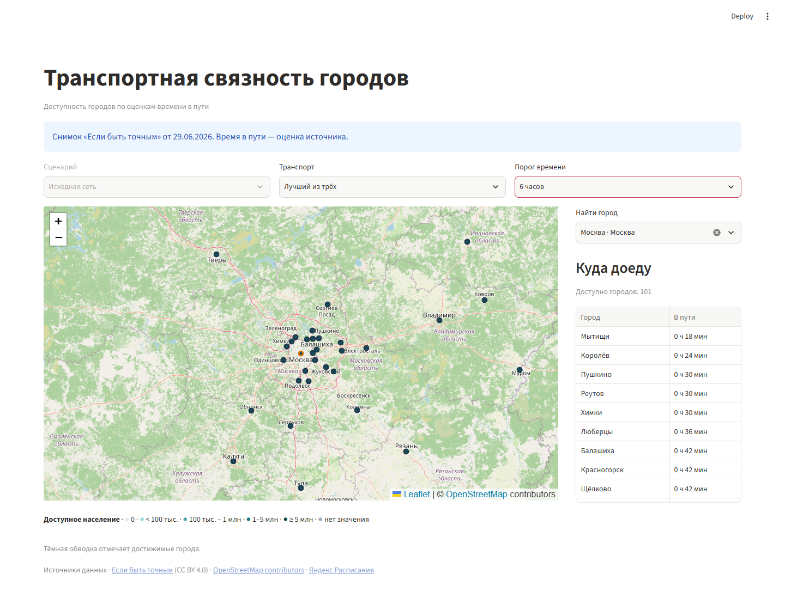

Транспортная связность городов России
Транспортная связность городов России
Доступность за заданное время
и устойчивость маршрутных связей
Алексей · Лина · Елисей · Мадина · Ранис
Финальная защита · 4 декабря 2026 года
Что измеряем
Городской аналитик выбирает отправление, вид транспорта и порог времени. Карта показывает, куда можно доехать и сколько человек живёт в этих городах.
3, 6, 24часа для оценки доступности
9версий графа для сравнения
2типа сценариев: удаление узла и добавление связи
- Доступность сравниваем по числу городов и сумме их населения.
- Критичность оцениваем по потерянным путям и росту времени.
Два снимка, два вида данных
| Источник | Вход | Что измеряет |
|---|
| «Если быть точным», 29.06.2026 | 96 660 строк × 22 поля, 180 городов, 23,5 МБ | Время и расстояние для направленных пар, три вида транспорта |
| Яндекс Расписания, 01.12.2026 | 1 424 сохранённых ответа, 179 сопоставленных городов, 3 482 направленные связи rail и air | Рейсы между станциями в выбранном окне поездки |
У 32 230 записей матрицы отсутствуют числовые значения. Они сохраняются с исходной причиной пропуска.
Как данные доходят до карты
Снимок→download→CSV + manifest→process→Нормализованные CSV
В PostgreSQL/PostGIS
migrate создаёт схему. load проверяет контрольные суммы и записывает снимок в транзакции.
В карту Streamlit
Экспортёр формирует JSON с временем направленных пар и суммой доступного населения.
Для первого скачивания нужна сеть. Готовый JSON читается локально, подложка OpenStreetMap загружается отдельно.
Снимок и измерения в PostgreSQL
data_snapshot→load_run→route_measurement
Город и идентификаторы
UUID связывает измерения с двумя городами. Sber ID и ОКТМО хранятся как внешние идентификаторы. Координаты WGS84 используются в PostGIS.
Повторная загрузка
В чистой базе перед и после повтора получили те же 180 городов, 360 внешних ID и 96 660 измерений. В базе один снимок и одна запись загрузки.
Запись сохраняет направление, вид транспорта, время в секундах и расстояние в метрах.
Из матрицы в направленный граф
Сохраняем ребро A → B, если в полной матрице отсутствует обход через третий город C в пределах допуска.
t(A,C) + t(C,B) ≤ (1 + α) × t(A,B)
Вес в секундах
road и rail используют оценку источника. best берёт минимум после добавления 3 часов к времени полёта.
Пример
Москва → Орёл: 24 480 с. Через Тулу: 10 440 + 10 440 = 20 880 с. Ребро удаляется при всех трёх α.
Прореживание меняет достижимость
| Слой и α | Рёбра | Пары матрицы, потерявшие путь |
|---|
| best · 0,05 | 5 642 | 0 |
| best · 0,10 | 3 218 | 0 |
| best · 0,20 | 1 350 | 2 054 |
| rail · 0,20 | 488 | 17 236 из 28 056 |
Берём α = 0,05 для основного сравнения. При 0,20 агрессивное прореживание уже разрывает часть путей.
Доступность по матрице времени
101город доступен из Москвы за 6 часов
Показатели
Считаем города с временем поездки ≤ порога. Складываем население этих городов. Город отправления исключён.
Контрольный пример воспроизведён в офлайн-карте. Региональная таблица и расчёт с записью в базу входят в #33.
Хранилище и производные представления
| Компонент | Ответственность | Состояние к этой сборке |
|---|
| PostgreSQL/PostGIS | Нормализованная база, аналитические таблицы | Проверены миграции и загрузка |
| Neo4j/GDS | Выгрузка версий графа и графовые метрики | Нужны графы #28 и проекция #34 |
| Elasticsearch | Поиск городов и фильтр по координатам | PR #48 открыт. На карте работает локальный список |
В сегодняшнем показе достаточно CSV и подготовленного JSON. Для сквозной интеграции нужны принятые проекции.
Устойчивость графа из матрицы
Слой best · α = 0,05 · 180 городов · взвешенный расчёт Python
| Сценарий | Величина | Результат |
|---|
| Посредничество | Доля кратчайших путей, 0–1 | Краснодар 0,0863 · Екатеринбург 0,0610 · Казань 0,0598 |
| Удалить Москву | Достижимые пары среди остальных | 31 862 → 31 862. Среднее время +0,031% |
| Удалить Томск | Потерянные направленные пары | 356 |
| Добавить ВСМ, 8 100 с | Доступное население за 6 ч | +224 286 из Москвы, +1 115 283 из Санкт-Петербурга |
Посредничество и потеря достижимости отвечают на разные вопросы. Сравнение чувствительности к α вынесено в отчёт.
Яндекс Расписания: без Москвы
Исходный граф 4 900
Без Москвы 3 660
Достижимые пары среди 179 городов, единица — пара
−25,3%
Потеря 1 240 пар. Москва исключена из начальных и конечных точек в обоих вариантах.
Абакан→Шереметьево
11:00–15:25 МСК→Грозный
Стыковка 4 ч 25 мин проверена по двум рейсам на 1 декабря. Графовый подсчёт проверяет пути по рёбрам.
Какие рейсы вошли в авиаграф
Охват городов
90 из 180 имеют аэропорт в справочнике.
72 из 180 имеют наблюдаемую связь.
От рейсов к рёбрам
1 157 станционных вариантов дали 482 направленные связи между городами.
Пропуски в снимке
У 465 из 1 609 отправлений в сохранённом окне нет подходящего прилёта.
Для 457 из 465 название рейса указывает на пункт вне набора. Это подсказка, которую сверяют с записью о прилёте.
Снимок на 1 декабря 2026 года. Для сравнения со второй датой требуется согласование хранения и обработки ответов API.
Карта достижимости за шесть часов

101достижимый город
Москва, слой «Лучший из трёх». Список справа показывает оценку времени поездки.
Тёмная обводка отмечает города в пределах порога.
Сценарий показа
Установить пакет→Экспортировать JSON→Запустить Streamlit
Основной эпизод
Открыть карту, выбрать Москву, «Лучший из трёх» и 6 часов. Проверить 101 строку направлений.
Резервный эпизод
Показать скриншот и схему Абакан → Шереметьево → Грозный. Сравнить 4 900 и 3 660 пар.
Для демонстрации матрицы ключ Яндекс Расписаний не требуется.
Время выполнения и пределы модели
| Этап | Время, с | Пик Python, МиБ |
|---|
| Проверка скачанного архива | 0,770 | 163,47 |
| Нормализация, 96 660 строк | 25,230 | 595,71 |
| Первая загрузка в БД | 2,216 | 41,62 |
| Офлайн-анализ девяти версий и сценариев | 47,243 | 153,02 |
По одному прогону · Windows 11 Pro · i5-12400F · 31,84 ГиБ · Python 3.12.3 · PostgreSQL 17.5 / PostGIS 3.5.2
- Число направленных пар растёт как N(N − 1). Текущий снимок обработан на одном узле.
- Матрица даёт оценочные времена. Авиаснимок охватывает одну дату. Для второй даты нужны условия доступа к хранению и обработке.